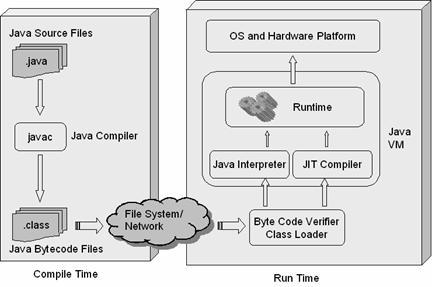
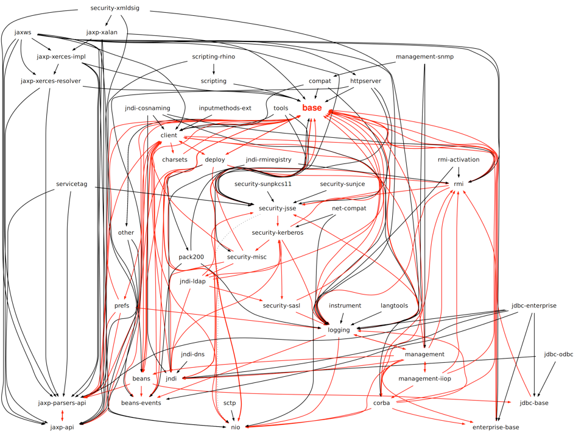
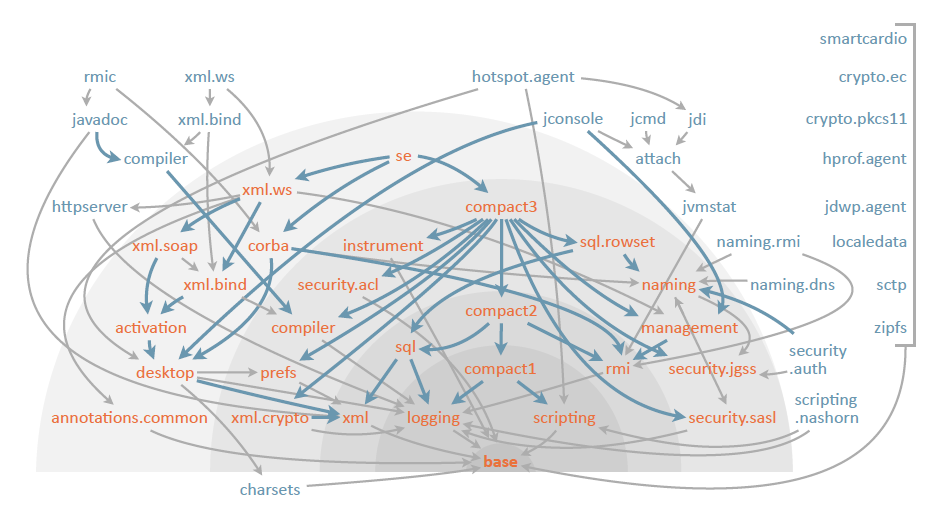
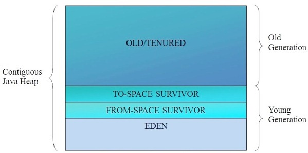
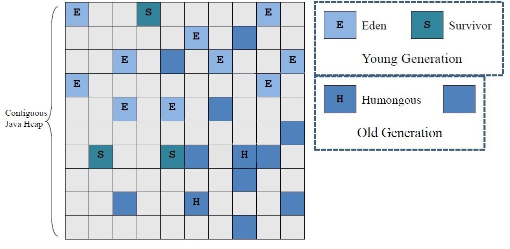
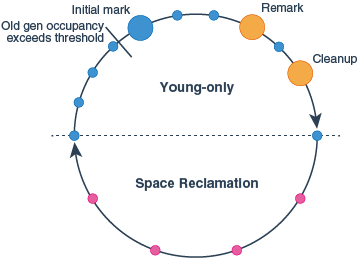

Java 9
A review of JSR (379)
Juan Antonio Breña MoralVíctor Herraiz Posada
Juan Antonio Medina
Agenda
- 000. Introduction
- 001. Java Platform Module System
- 010. Concurrency Updates
- 011. The Java Shell
- 100. The Garbage first collector (G1)
- 101. Streams improvements
Introduction
Feature: Review JSR 379
Teach some points about JSR 379
Background: Audience with heteregeneous Java/JVM skills
Scenario: The talk begin
Given A listener with interest to learn about Java 9
Then The talker will explain the introduction:
| # | Point |
| 1 | JEP vs JRS |
| 3 | List of features included on Java 9 |
JEP vs JSR
JDK Enhancement Proposal (JEP): is a process for collecting proposals for enhancements to the Java Development Kit and OpenJDK.
https://en.m.wikipedia.org/wiki/JDK_Enhancement_Proposal
Java Specification Requests (JSR): are the actual descriptions of proposed and final specifications for the Java platform.
Features includes with Java 9
How many days to release Java 9?
http://www.java9countdown.xyz/
Do you know the list of features included?
JSR 376: JIGSAW
Feature: Review The Java Platform Module System
Scenario: Java projects will have to compiled with Java 9 JVM
Given The developer need to know the changes
Then The talker will explain the following points:
| # | Point |
| 1 | Introduction |
| 2 | Why we need a Module system? |
| 3 | API Reorganization |
| 4 | How to create a Module? |
| 5 | Build systems |
| 6 | Open issues |
| 7 | Conclusions |
Introduction
- JSR 376: Java Platform Module System
- JEP 161: Compact Profiles
- JEP 162: Prepare for Modularization
- JEP 200: The Modular JDK
- JEP 260: Encapsulate Most Internal APIs
- JEP 261: Module System
- JEP 282: jlink: The Java Linker
- JEP 220: Modular Run-Time Images
- JEP 201: Modular Source Code
- JEP 275: Modular Java Application Packaging
- JEP 238: Multi-Release JAR Files
Introduction
Jigsaw updates some points in the JVM architecture:
Why we need a Module system?
JVM Classloader:

Why we need a Module system?
JVM Classloader:

JEP 161: Compact Profiles

JEP 200: The Modular JDK
JEP 200: The Modular JDK
https://docs.oracle.com/javase/8/docs/api/
http://download.java.net/java/jdk9/docs/api/index.html?overview-summary.html
Jigsaw project
- Modularity for the Java platform
- Reliable configuration (goodbye classpath)
- Strong encapsulation (goodbye com.sun)
- Enforce strict boundaries between modules
- compile-time
- run-time
How to create a module
module-info.java
module org.example @ 1.0 {
requires jdk.base;
requires com.google.guava @ 18.0;
exports org.example.api;
}
export JAVA_HOME=/Library/Java/Home
gradle init --type java-library
java version "9-ea"
time java -verbose:class --module-path ./build/libs -m demo/demo.HelloWorld
0,42s user 0,07s system 80% cpu 0,600 total
780 classes loaded
java version "9-ea"
time java -verbose:class -jar hello_world-0.1.0-SNAPSHOT.jar
0,26s user 0,05s system 75% cpu 0,419 total
594 classes loaded
java version "1.8.0_121"
time java -verbose:class -jar hello_world-0.1.0-SNAPSHOT.jar
0,13s user 0,03s system 50% cpu 0,311 total
480 classes loaded
Open issues
Concurrency updates

JShell
The Garbage first collector (G1)
Java Heap
Java objects reside in an area called the heap.
Is created when the JVM starts up and may increase or decrease in size while the application runs.
When the heap becomes full, garbage is collected.
Note that the JVM uses more memory than just the heap. Java methods, thread stacks and native handles are allocated in memory separate from the heap, as well as JVM internal data structures.
Garbage Collector
A garbage collector automatically handles freeing of unused object memory by reclaiming when it can prove that is no longer accessible.
Traditionally, garbage collection has been considered an inefficient process, with modern technology performance is actually better than explicit freeing of objects.
Serial Collector
Mainly designed for single-threaded environments and for small heaps.
This collector freezes all application threads whenever it’s working, which disqualifies it for all intents and purposes from being used in a server environment.
Parallel collector
Its biggest advantage is that is uses multiple threads to scan through and compact the heap.
The downside to the parallel collector is that it will stop application threads when performing either a minor or full GC collection.
The parallel collector is best suited for apps that can tolerate application pauses and are trying to optimize for lower CPU overhead caused by the collector.
Concurrent-Mark-Sweep collector
Uses multiple threads (“concurrent”) to scan through the heap (“mark”) for unused objects that can be recycled (“sweep”).
Uses more CPU to provide continuous throughput, by using multiple threads.
For most long-running server applications which are adverse to application freezes, that’s usually a good trade off to make.
G1 collector
The Garbage first collector (G1) introduced in JDK 7 designed to better support heaps larger than 4GB.
Utilizes multiple background threads to scan through the heap divides into regions, from 1MB to 32MB (depending on heap size), the goal is to have around 2048 regions.
G1 collector is geared towards scanning those regions that contain the most garbage objects first, giving it its name (Garbage first).
G1 Basics
Is an incremental parallel compacting GC that provides more predictable pause times compared to CMS and Parallel.
Introducing a parallel, concurrent and multi-phased marking cycle.
Can work with much larger heaps while providing reasonable worst-case pause times.
The basic idea your set your heap ranges and a realistic (soft real time) pause time goal and then let the GC do its job.
Old Heap Layout
Conventional GC layout a contiguous Java heap splits into (contiguous) young and old generations.
G1 Heap Layout
G1 Regions
Heap space divides into amultiple fixed-sized regions.
As the need arises, the free regions are assigned to either the young or the old generation.
Once a region frees up, it goes back to the "free" regions list.
Reclaim heap as much as possible (trying to meet the pause time goal) collecting regions with the least amount of live data, the ones with most garbage.
Young Generations
Contains eden regions or survivor regions.
These regions provide the same function as the respective contiguous spaces in other collectors, with the difference that are typically laid out in a noncontiguous pattern in memory.
Old Generations
Old regions make up the old generation. Old generation regions may be humongous, that is they might span multiple regions.
Allocation
An application always allocates into a young generation, that is, eden regions, with the exception of humongous, objects that are directly allocated as belonging to the old generation.
G1 can reclaim space in young generations as a whole, and any additional set of old generation regions.
Copyng
G1 copies objects from a collection set to one or more different regions.
The destination depends on the source:
Entire young generation is copied into either survivor or old regions, and objects from old regions to other, different old regions using aging.
Garbage Collection Cycle
Collector alternates between two phases. 'Young-only' contains garbage collections that fill up the currently available memory with objects in the old generation gradually. 'The space-reclamation' reclaims space in the old generation incrementally.
Vs Parallel
Parallel GC can compact and reclaim space in the old generation only as a whole.
G1 incrementally distributes this work across multiple much shorter collections.
This substantially shortens pause time at the potential expense of throughput.
VS CMS
Similar to the CMS, G1 concurrently performs part of the old generation space-reclamation concurrently. However, CMS can’t defragment the old generation heap, eventually running into long Full GC's.
G1 can reclaim some completely empty, large areas of the old generation at any collection. This could avoid many otherwise unnecessary garbage collections, freeing a significant amount of space without much effort.
Tunning
# The goal for the maximum pause time.
-XX:MaxGCPauseMillis=200
#The goal for the maximum pause time interval. By default G1
#doesn’t set any goal, allowing G1 to perform garbage
#collections back-to-back in extreme cases.
-XX:GCPauseTimeInterval=ergo
#The maximum number of threads used for parallel work during
#garbage collection pauses. This is derived from the number
#of available threads of the computer that the VM runs on in
#the following way: if the number of CPU threads available to
#the process is fewer than or equal to 8, use that.
#Otherwise add five eighths of the threads greater than to
#the final number of threads.
-XX:ParallelGCThreads=ergo
#The maximum number of threads used for concurrent work.
#By default, this value is -XX:ParallelGCThreads divided by 4
-XX:ConcGCThreads=ergo
#Defaults for controlling the initiating heap occupancy
#indicate that adaptive determination of that value is turned on,
#and that for the first few collection cycles G1 will use an
#occupancy of 45% of the old generation as mark start threshold.
-XX:+G1UseAdaptiveIHOP
-XX:InitiatingHeapOccupancyPercent=45
#The set of the heap region size based on initial and maximum
#heap size. So that heap contains roughly 2048 heap regions.
#The size of a heap region can vary from 1 to 32 MB,
#and must be a power of 2.
-XX:G1HeapRegionSize=ergo
#The size of the young generation in total, which varies
#between these two values as percentages of the current Java
#heap in use
-XX:G1NewSizePercent=5
-XX:G1MaxNewSizePercent=60
#The allowed unreclaimed space in the collection set
#candidates as a percentage. G1 stops the space-reclamation
#phase if the free space in the collection set candidates is
#lower than that.
-XX:G1HeapWastePercent=5
#The expected length of the space-reclamation phase in a
#number of collections.
-XX:G1MixedGCCountTarget=8
#Old generation regions with higher live object occupancy
#than this percentage aren't collected in this space-reclamation phase.
-XX:G1MixedGCLiveThresholdPercent=85